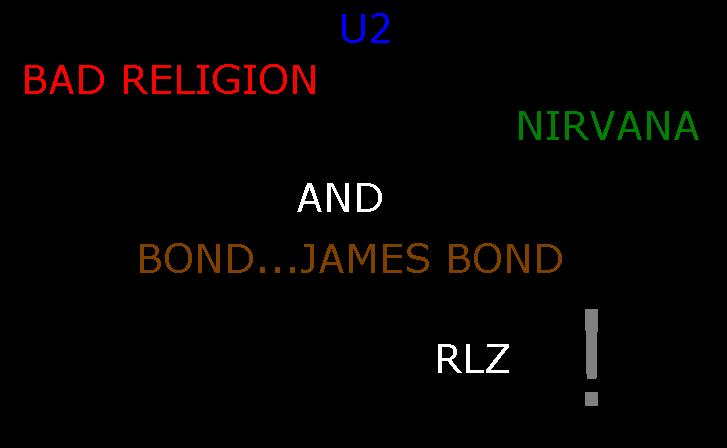
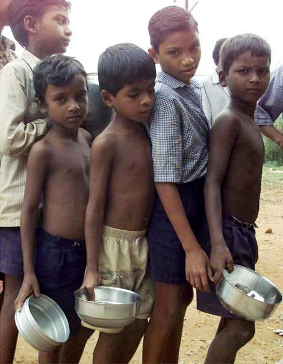

O que querem os anarquistas?
"O Estado é a negação da humanidade!" Mikhail Bakunin
Em artigo bastante contundente e expressivo, Errico Malatesta, discípulo italiano do russo Bakunin, discorre sobre o que é e o que se deve fazer "Rumo à Anarquia".
Em primeiro lugar, deve-se desprezar concepções errôneas segundo as quais "anarquia" seria sinônimo de "bagunça". Anarquia é ausência de governo e mesmo de atividade parlamentar; que os agentes políticos devem atuar diretamente em busca de manter e ampliar todas as formas de participação nos aspectos decisórios da sociedade em que vivem. Ação Direta, aliás, é o nome que adotam várias organizações anarquistas pelo mundo afora.
Diz-nos Malatesta em seus "Escritos Revolucionários" que "Se quiséssemos substituir um governo por outro, isto é, impor nossa vontade aos outros, bastaria, para isso, adquirir a força material indispensável para abater os opressores e colocarmo-nos em seu lugar * Mas, ao contrário, queremos a Anarquia, isto é, uma sociedade fundada sobre o livre e voluntário acordo, na qual ninguém possa impor sua vontade a outrem, onde todos possam fazer como bem entenderem e concorrer voluntariamente para o bem-estar geral. Seu triunfo só poderá ser definitivo quando universalmente os homens não mais quiserem ser comandados ou comandar outras pessoas e tiverem compreendido as vantagens da solidariedade para saber organizar um sistema social no qual não mais haverá qualquer marca de violência ou coação".
A atividade do anarquista, do socialista utópico (em sua sublime acepção de conquista da Esperança possível) não é violenta nem repentina, mas gradual, pedagógica, passo a passo.
"Não se trata de chegar à anarquia hoje, amanhã ou em dez séculos, mas caminhar seguramente rumo à anarquia hoje, amanhã e sempre. A anarquia é a abolição do roubo e da opressão do homem pelo homem, quer dizer, abolição da propriedade privada dos meios materiais e espirituais de produção e do governo formal; a anarquia é a destruição da miséria, da superstição e do ódio entre as pessoas. Portanto, cada golpe desferido nas instituições da propriedade privada dos meios de produção e do governo é um passo rumo à anarquia. Cada mentira desvelada, cada parcela de atividade humana subtraída ao controle da autoridade, cada esforço tendendo a elevar a consciência popular e a aumentar o espírito de solidariedade e de iniciativa, assim com a igualar as condições é um passo a mais rumo à anarquia."
Os surrealistas, que há anos estão unidos aos anarquistas afirmam ainda que cada vez que um casal se une e sua união não é uma fancaria, mas a autêntica expressão do verdadeiro amor entre duas pessoas que se completam plenamente, ocorre mais um abalo no que chamam de "gigantesca caserna" em que se tornou a sociedade industrial. "O ocidente é um acidente!" denuncia Roger Garaudy em "Apelo aos Vivos" com a autoridade de quem sempre esteve nos pontos mais avançados de defesa política e filosófica do que promove o humano no mundo.
Seguindo com Malatesta: "Não podemos, de pronto, destruir o governo existente, talvez não possamos amanhã impedir que sobre as ruínas do atual governo um outro surja: mas isto não nos impede hoje, assim como não nos impedirá amanhã, de combater não importa que governo, recusando-nos a submetermos à lei sempre que isto seja contrário aos nossos imperativos de consciência. Toda a vez que a autoridade é enfraquecida, toda a vez que uma grande parcela de liberdade é conquistada e não mendigada, é um progresso rumo à anarquia. Da mesma forma, também é um progresso toda a vez que consideramos o governo como um inimigo com o qual nunca se deve fazer trégua, depois de nos termos convencido que a diminuição dos males por ele engendrados só é possível pela redução de suas atribuições e de sua força, não pelo aumento no número de governantes ou pelo fato de serem eles eleitos pelos governados. E por governo entendemos todo o indivíduo ou grupo de indivíduos, no Estado, Conselhos etc. que tenha o direito de fazer impor leis injustas sobre quem com elas não concorda".
Contundente e radical, repita-se, Malatesta e toda a tradição anarquista que lhe segue proporá a chegada a um governo auto-gestionário, do qual todos possam participar livremente. Um sistema auto-gestionário que possibilite participar livre e alegremente de todo o processo decisório e de execução do que terá sido decidido coletivamente, para que se chegue ao maior aperfeiçoamento social promotor do humano no mundo. Toda a vitória, por menor que seja, dos trabalhadores sobre as classes patronais, todo o esforço contra a exploração do homem pelo homem, toda a parcela de riqueza subtraída aos proprietários e posta à disposição daqueles que a geraram, toda a união amorosa plena entre duas pessoas que se amam intensa e sinceramente, tudo o que se fizer para melhorar as condições existenciais da maioria enfim, será mais um progresso, mais um passo rumo à anarquia, "este sonho de justiça e de amor entre os homens..."
pra falar...recebi uma mensagem da josie, q dizia algo q pensei e vi q era verdade...eis a mensagem:
"se o brasileiro soubesse cobrar políticos da mesma forma q cobram jogador de futebol, seriamos a melhor nação do mundo!"
Greetz to.:
TDK, inferno.br (kd vcs? "a luta continua"), OHB, einstein, MOD, ULG, f0rpaxe.
Friends.:
chila (Me acorde!), r4rix, Josie (e ae sumida?) ana cres (brasília rlz!), N@tGirl (y0
br0! sup?), turatti, Super Amanda, gabi, xande, magali, lijau, dig, bussunda, colli,
danone (ñ ignore), bianca (ae o MAURAO!), ana, tatesoca, carol (valeu a ajuda ae) andré,
bauchi, pedrao metaleiro, loira boa e a minha SUPER AMIGA ADRIANA...tem
ainda a minha visinha gostosa !!! Huahuahuahua!!!
Fuckz to.:
H4G1S, sgi joe, ALOC, UN1X BL0W1NG T34M (acho q é isso...), Orange Limonade etc.
"Eu acho q amo quem nao me ama" - SysVinit - palavras sábias...heeheh...zueira...mas eu amo a Priscila SIM!
"Nemo me impune
lacessit"
"In pace requiescat"
Priscila - " t'a gr'a agam dhuit! "